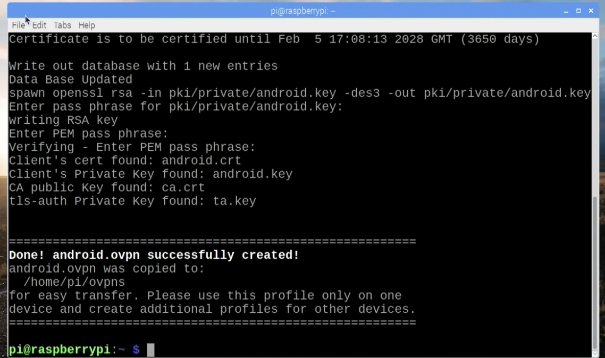
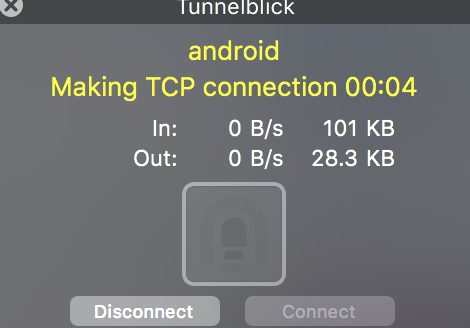

Qu'est-ce qu'un serveur internet?
Un serveur informatique est un dispositif informatique (matériel ou logiciel) qui offre des services a un ou plusieurs clients. Il fonctionne en permanence, et répond automatiquement aux requêtes provenant des clients avec lesquels il est connecté.
Les services les plus courants proposés par un serveur sont:
- L'accès au informations du World Wide Web
- L'envoi et la consultaiton de couriels
- Le partage d'imprimante (sur un réseau local, notamment)
- Le stockage d'informations en bases de données
- la gestion de l'authentification et du controle d'accès
- Le jeu et la mise à disposition de logiciels applicatifs
- - - - - -
♠ Que sont les Protocoles Internet? ♠
La suite TCP/IP est l'ensemble des protocoles utilisés pour le transfert de données sur Internet. Cette famille de protocole est subdivisée en plusieurs couches qui servent plusieurs objectifs différents.
La première couche correspond a la couche application. En comparant le modèle TCP/IP au modèle OSI, on voit que les protocoles tels que HTTP, HTTPS, FTP, Telnet, qui servent a communiquer entre client et serveur, ASCII, Unicode, qui servent à présenter les informations à l'écran, RPC, ASP, qui servent a analyser les sessions utilisateurs, ainsi que TCP et UDP, qui servent à assurer le transfert de l'information entre le client et le serveur, appartiennet tous à cette couche du modèle.
♠ Qu'est-ce qu'une addresse IP? ♠
$Expliquer ce qu'est une addresse IP statique vs dynamique$
♠ Qu'est ce que les ports? ♠
$expliquer ce qu'un port$
♠ Qu'est-ce qu'un réseau? ♠
$Expliquer ce qu'est un réseau internet et comment ça marche$
♠ Qu'est-ce qu'un réseau proxy? ♠
$Expliquer ce qu'est un réseau proxy$
♠ Qu'est-ce qu'un réseau VPN? ♠
$Expliquer ce qu'est un réseau VPN$
- - - VPN SUR RARSPBERRY PI - - -
♠ Introduction ♠
Afin d'installer un VPN sur notre Raspberry Pi, nous avons choisit d'utiliser le logiciel PiVPN. Il nous permet de configurer et installer sur la Raspberry Pi un serveur OpenVPN
♠ Qu'est ce que OpenVPN? ♠
OpenVPN est un logiciel (open-source en plus) utilisant des méthodes de VPN pour créer une connection point à point, ou entre deux sites sécurisée.
♠ Télécharger PiVPN ♠
Notre raspberry pi était sous le système d’exploitation Raspbian OS lite, donc tout s’est fait en headless (c’est-à-dire seulement en utilisant le terminal de la raspberry pi, nous n’avions pas d’interface graphique, et n’avons donc pas utilisé de souris).
En premier, nous avons installé PiVPN en utilisant la commande suivante:
curl -L https://install.pivpn.io l bash
Curl est une commande permettant de transférer de l’information vers un serveur ou d’en recevoir. Ici, nous recevons l’information stocké à install.pivpn.io, qui est le logiciel en question que nous voulons. Il est important de comprendre que cette commande peut être dangereuse lorsqu’on ne connait pas la source que l’on cible avec curl.
♠ Configuration du VPN ♠
PiVPN configure la Raspberry Pi de sorte que nous avons une adresse IP statique. Comme ça si jamais nous redémarrons la Raspberry Pi, celle ci ne changera pas d’adresse IP.
Nous avons activé les mises à jour de sécurité. Cela est très important puisque nous allons ouvrir un port sur notre routeur pour rediriger la Raspberry Pi vers internet et ainsi créer de potentielles vulnérabilités.
Nous avons ensuite changé le port par défaut proposé par PiVPN. Cela ajoute également une couche de sécurité puisque certaines attaques se font en scannant les ports par défaut.
À présent, il est temps de créer la clé d’encryption. Nous avions le choix entre créer une clé RSA de 1024, 2048 ou 4096 bits d’encryption. Plus la clé aura nombre de bits d’encryptions élevée, plus elle prendra du temps à être générée et sera par conséquent plus sécurisée. Comme nous utilisions une Raspberry Pi 3 B+, nous aurions pu choisir une encryption à 4096 bits, mais nous avons opté pour 2048 à la fin, qui a prit environ 3 minutes à générer.
Nous devions maintenant choisir entre une adresse IP publique ou un DNS pour notre configuration DNS
Définition DNS: protocole d’association entre l’URL d’un site (exemple: www.google.com) en adresse IP, que l’ordinateur sait reconnaître pour communiquer avec le serveur hébergeant ce site.
Note: si le but d'un VPN est d’avoir une confidentialité dans les informations privées, il est important d’être conscient du fait que certains fournisseurs DNS enregistrent leurs informations et créent des set de données sur les individus.
C'est la fin de la configuration du VPN, nous redémarrons notre Raspberry Pi à présent, question de principe…
Créer le fichier client OpenVPN
Nous devons maintenant créer un fichier client OpenVPN, nous avons fait cela avec la commande:
pivpn add
Nous choisissons android.ovpn comme nom, nous devons également choisir un mot de passe, nous recommandons un mot de passe long et compliqué.
Une fois que la clé est crée, il ne reste plus que la transférer sur l’appareil sur lequel on souhaite avoir le VPN.
Transférer le fichier
Pour le transférer, nous avons une technique assez efficace: Il suffit de faire passer la Raspberry Pi en Serveur HTTP Simple temporaire avec la commande (toujours dans le terminal):
python -m SimpleHTTPServer 8080 (Cela ne marche que avec python installé bien entendu)
En se connectant avec un appareil à l’adresse IP de la Raspberri Pi, sur le port 8080, nous pouvons directement télécharger le fichier android.ovpn!
Conclusion
Une fois le fichier client Open VPN sur l’appareil, il suffit de l’utiliser avec un client Open VPN, il en existe beaucoup. Pour Windows, il y a OpenVPN, pour android, il y a OpenVPN Connect et pour Mac nous recommandons Tunnelblick.
Problèmes...
Au final, il y avait un problème lorsque l'on a essayé d'établir une connection entre notre appareil et la Raspberry Pi. Nous avons essayé de nous connecter sur le serveur VPN via des ordinateurs Windows et Mac, avec OpenVPN et TunnelBlick, ainsi que avec un téléphone android avec OpenVPN Connect. Dans tout ces cas de figures, il n'y avait pas de messages d'erreur, mais les logs affichaient qu'ils étaient en attentent.
Voici ce que TunnelBick affiche(le compteur allait jusqu'à 10 minutes puis la fenêtre se ferme):
Nous avons des idées des causes de ces